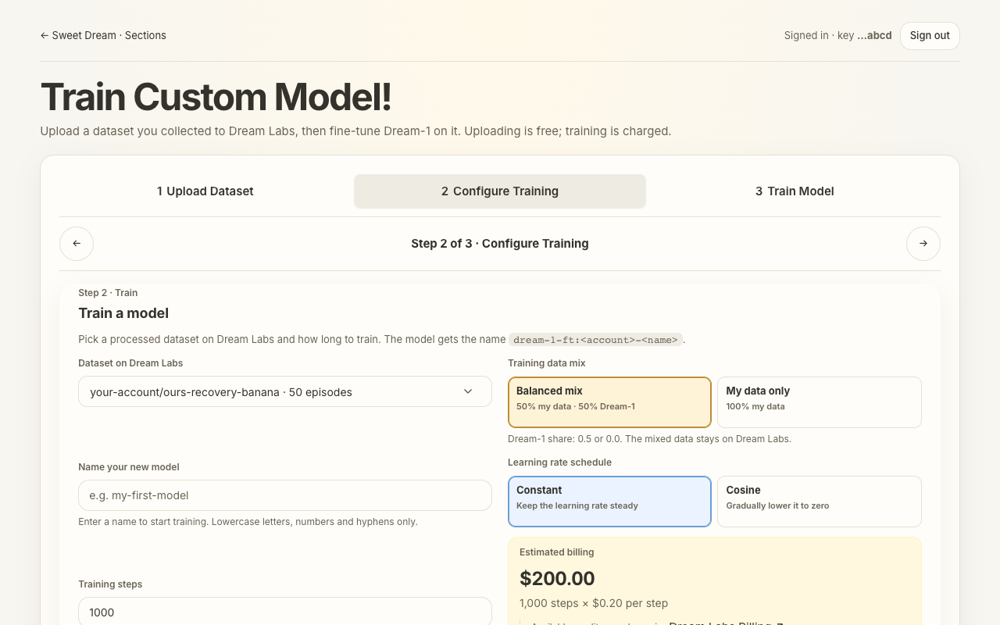
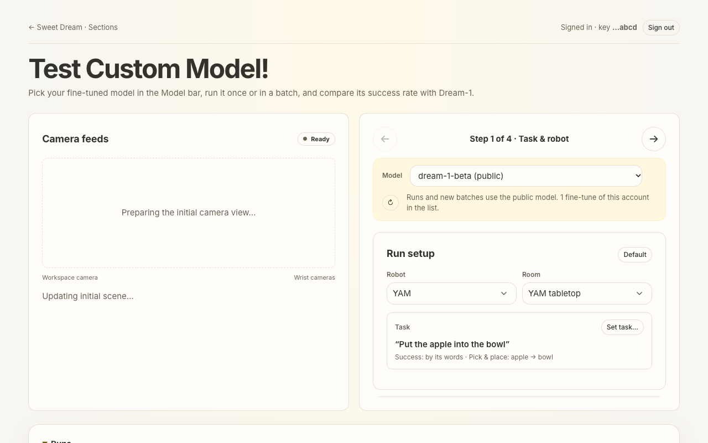
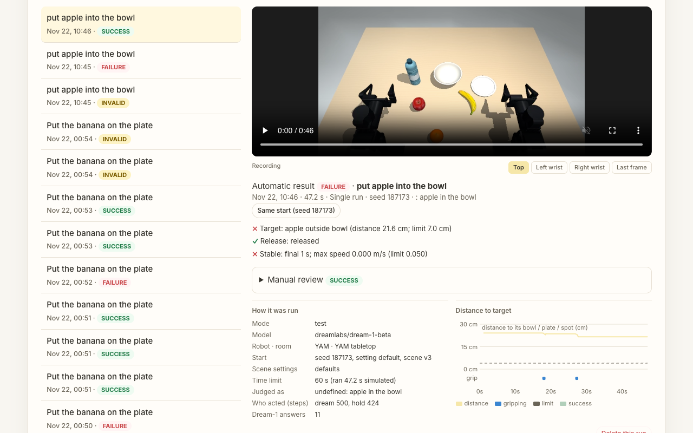

Sweet Dream is a local web app around a MuJoCo simulation of the YAM two-arm robot, in three chapters that follow the loop above: collect a dataset of successful, varied episodes; train a custom Dream-1 on it through the Dream Labs API; and test the new model in the same scenes against Dream-1. You sign in once with your Dream API key; every chapter uses it.
Chapter 1


| Setting | Episodes | Success |
|---|---|---|
| Rule-based only, "put the banana on the plate", varied camera, light and room | 68 valid | 66 (97%) |
| Data collection (Dream-1 + recovery), failures handed to the script sooner, same 3 seeds | 3 | 1 → 3 |
| Rule-based script on 4 pick-and-place tasks × 5 seeds, after the reach and hand-over fixes | 20 | 4 → 7 |
Same task and seed: the default scene on the left, a changed one on the right. Use the arrows or swipe.
The three views Dream-1 is trained on.
Chapter 2
Fine-tune Dream-1 on a collected dataset from the app, with the key you signed in with.


1 · Upload
Pick a saved dataset and upload it. Free.
2 · Process
Dream Labs prepares it in a few minutes. Free.
3 · Train
Choose the steps and see the price. Once started, it can't be cancelled.
4 · Follow
Watch the progress; the finished model appears here.
Our banana dataset, 50 unique seeds and 5,078 frames in two rooms, passed the Dream Labs validator and was uploaded and processed from the Train page, ready for a fine-tuning job. Training runs and their curves will be added here.
Chapter 3
The Test page runs a model on its own, without the failure monitor or the recovery script, so its success rate is the model's. A Model bar lists the models your key can run, the public Dream-1 betas and your fine-tunes, and every run records which one it used. A fine-tune that is still starting up is waited for (up to 10 minutes, not counted in the run's time).
Runs and batches use the same seeded scenes as collection, including the fixed evaluation set of 50 seeds, so a fine-tuned model and Dream-1 can be compared start for start.


The comparison of our fine-tuned model with Dream-1 on the evaluation seeds will be added here.
python3 -m venv ~/dream-env
~/dream-env/bin/pip install dreamlabs pyarrow av
~/dream-env/bin/python src/app.py --port 8000
# open http://localhost:8000 and sign in with your Dream API keyEvery page and option is described in the usage guide.
@misc{sweetdream2026,
title = {Sweet Dream: Diverse Data for Custom Dream-1 Fine-Tuning},
author = {{Sweet Dream contributors}},
year = {2026},
howpublished = {\url{https://github.com/2btlFe/Sweet-Dream}}
}